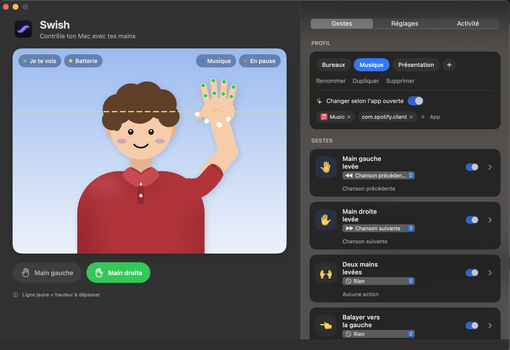

Swish
Lève la main.
Ton Mac fait le reste.Raise your hand.
Your Mac does the rest.
Change de bureau, mets ta musique en pause ou avance une présentation, sans toucher au clavier. Switch desktops, pause your music or advance a slideshow, without touching the keyboard.
Un geste. Une action.A gesture. An action.
Les réglages de départ. Chaque geste peut faire autre chose.The default setup. Every gesture can be changed.
Tout se règle en un coup d'œil.Everything at a glance.
Ce que voit la caméra à gauche, tes gestes et tes profils à droite.What the camera sees on the left, your gestures and profiles on the right.

Fait pour ton Mac.Made for your Mac.
Plusieurs actions d'un coup.Several actions at once.
Un raccourci, une app, un site, un Raccourci ou un AppleScript, à la suite.A shortcut, an app, a website, a Shortcut or an AppleScript, one after another.
La vidéo ne quitte jamais ton Mac.The video never leaves your Mac.
La détection se fait avec Vision, l'outil d'Apple. Pas de compte, rien n'est envoyé.Detection runs on Apple's Vision framework. No account, nothing is sent.
Le bon profil, tout seul.The right profile, automatically.
Musique quand Spotify est ouvert, Présentation dans Keynote.Music when Spotify is open, Presentation in Keynote.
Doux pour la batterie.Easy on the battery.
La caméra s'éteint quand tu pars ou quand tu verrouilles ton Mac.The camera turns off when you leave or lock your Mac.
Prêt en une minute.Ready in a minute.
TéléchargeDownload
Dézippe et glisse Swish dans Applications.Unzip and drag Swish into Applications.
OuvreOpen
Réglages Système › Confidentialité et sécurité › Ouvrir quand même.System Settings › Privacy & Security › Open Anyway.
Si bloquéeIf blocked
Dans Terminal :In Terminal:xattr -cr /Applications/Swish.app
AutoriseAllow
Caméra et Accessibilité. Lève la main.Camera and Accessibility. Raise your hand.
QuestionsQuestions
Est-ce que ça use la batterie ?Does it drain the battery?
Un peu. Sur batterie, Swish analyse moins d'images, et la caméra s'arrête quand l'écran dort ou que le Mac est verrouillé.A little. On battery Swish analyzes fewer frames, and the camera stops when the display sleeps or the Mac is locked.
Ça change de bureau quand je me gratte la tête.It switches desktops when I scratch my head.
Monte la hauteur de la main ou le temps de maintien dans Réglages. Pause rapide : ⌃⌥⌘P.Raise the hand height or hold time in Settings. Quick pause: ⌃⌥⌘P.
Pourquoi macOS dit qu'elle est endommagée ?Why does macOS say it's damaged?
Swish n'est pas signée par Apple. La commande de l'étape 3 règle ça.Swish isn't signed by Apple. The command in step 3 fixes it.
Comment l'enlever ?How do I remove it?
Quitte Swish depuis la main en haut de l'écran, puis mets l'app à la corbeille.Quit Swish from the hand icon in the menu bar, then move the app to the Trash.